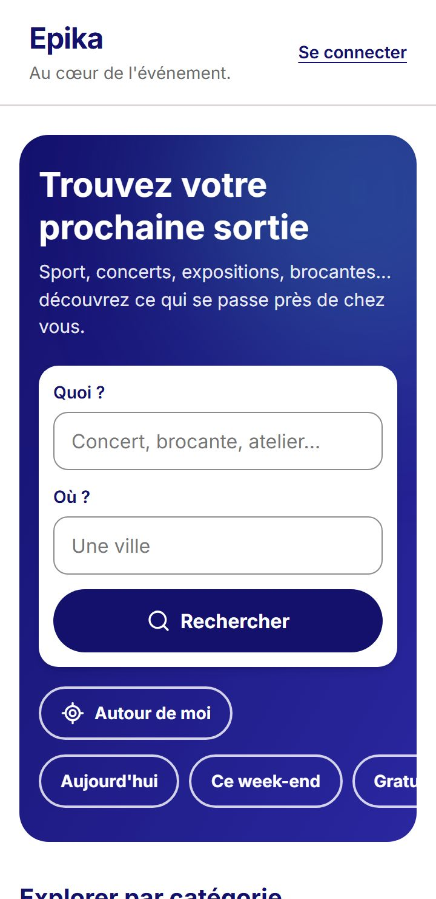

Le parcours, du clic aux résultats
- Le visiteur clique sur « Autour de moi »Sur l'accueil (bandeau navy) ou sur la page de résultats. Rien n'est demandé au chargement de la page.
- Epika explique avant de demanderUn court message dit ce qui va être demandé, pourquoi, et ce que devient la position. Ensuite seulement, « Me localiser » déclenche la fenêtre d'autorisation du navigateur.
- Le navigateur donne la position, arrondie aussitôt
useGeolocation: sans puce GPS, 10 s au maximum, arrondi à 2 décimales (environ 1,1 km) avant tout envoi. - L'API trouve la commune
GET /api/geo/commune?lat=43.13&lon=5.92arrondit à nouveau et interroge le géocodage inverse de la Géoplateforme (IGN). - La recherche par ville s'ouvre
/recherche?ville=Toulon&cp=83200reprend le rayon, l'élargissement et le tri « Plus proche d'abord ». Sur la page de résultats, les autres filtres sont conservés.
En images
Captures prises par Playwright contre la fausse API d'Epika : toutes les données sont fictives. Sur ordinateur à gauche, sur téléphone à droite.
-


L'accueil : « Autour de moi » est dans le bandeau de recherche, à côté des champs « Quoi ? » et « Où ? ».
Vie privée : une position appartient à une personne
C'est le choix central de l'issue : chercher par commune plutôt que par coordonnées exactes.
- Arrondie deux fois à environ 1 km, dans le navigateur puis dans le backend : la Géoplateforme ne reçoit jamais plus que cela.
- Jamais enregistrée : pas de cache, contrairement aux noms de villes (une ville appartient à tout le monde).
- Jamais écrite dans un log par le code d'Epika. Les journaux d'accès du serveur de production (lot 6, #99) devront exclure les paramètres de cette route.
- Une adresse partageable et anonyme : l'URL des résultats contient une ville, pas des coordonnées.
Backend · #68 · PR #172
La route GET /api/geo/commune
Publique, sans compte. Une Resource API Platform et son Provider, sans controller.
| Réponse | Quand |
|---|---|
| 200 | { "city": "Toulon", "postcode": "83200" } : la commune et le code postal de l'adresse la plus proche. |
| 404 | Aucune adresse française à proximité (en mer, à l'étranger). |
| 422 | lat (-90 à 90) ou lon (-180 à 180) absent ou non numérique : une erreur par champ. |
| 429 | Plus de 30 requêtes par minute depuis la même IP (geo_commune_ip) : Epika n'est pas un géocodeur gratuit pour les scripts. |
| 503 | La Géoplateforme ne répond pas. |
Les pièces
CommuneFinder: le géocodage inversePositionQuery: le DTO, des chaînes jusqu'à validationCommuneProvideretCommuneResourceCommune: un objet-valeur, ville et code postal
Le piège évité
La première version demandait type=municipality. Elle renvoyait le centre de la commune, souvent trop loin pour le cercle de recherche : un point dans Toulon ne trouvait rien. La requête finale cherche l'adresse la plus proche (index=address, limit=1).
Frontend · #73 · PR #173
Chaque échec a son message
| État | Cause | Ce qui est dit |
|---|---|---|
denied | Le visiteur refuse | Indiquez une ville, ou autorisez la localisation dans les réglages. |
unavailable | Pas de géolocalisation, page hors HTTPS, aucune position | Votre position n'est pas disponible sur cet appareil. |
error | Trop lent (10 s), ou l'API en panne | La localisation n'a pas abouti. Réessayez. |
nowhere | L'API répond 404 | Aucune commune française n'a été trouvée. |
Accessibilité (RGAA)
- Le bouton annonce son panneau (
aria-expanded,aria-controls) - Les échecs en
role="alert", la progression enaria-live="polite" - Une seule zone
role="status"par page : celle du nombre de résultats - Des cibles d'au moins 44 px
Les tests
- Vitest : l'arrondi, la route appelée, les 4 états
- Playwright : accordé, refusé, en mer, avec
setGeolocation - axe en WCAG 2.2 AA
- PHPUnit :
CommuneApiTestavecMockHttpClient
Deux PR, l'API puis l'interface
- #172Backend :
CommuneFinder, la route avec sa limite par IP, la section « Around me » dedocs/search.md. - #173Frontend :
services/geo.ts,useGeolocation,AroundMeButton, les tests de bout en bout.
La limite assumée
Le rayon part du centre de la commune, pas de l'endroit exact du visiteur. Dans une grande ville, « autour de moi » veut donc dire « autour de ma ville ». C'est le prix de la vie privée, et le cahier des charges l'intègre dans sa prochaine mise à jour groupée.